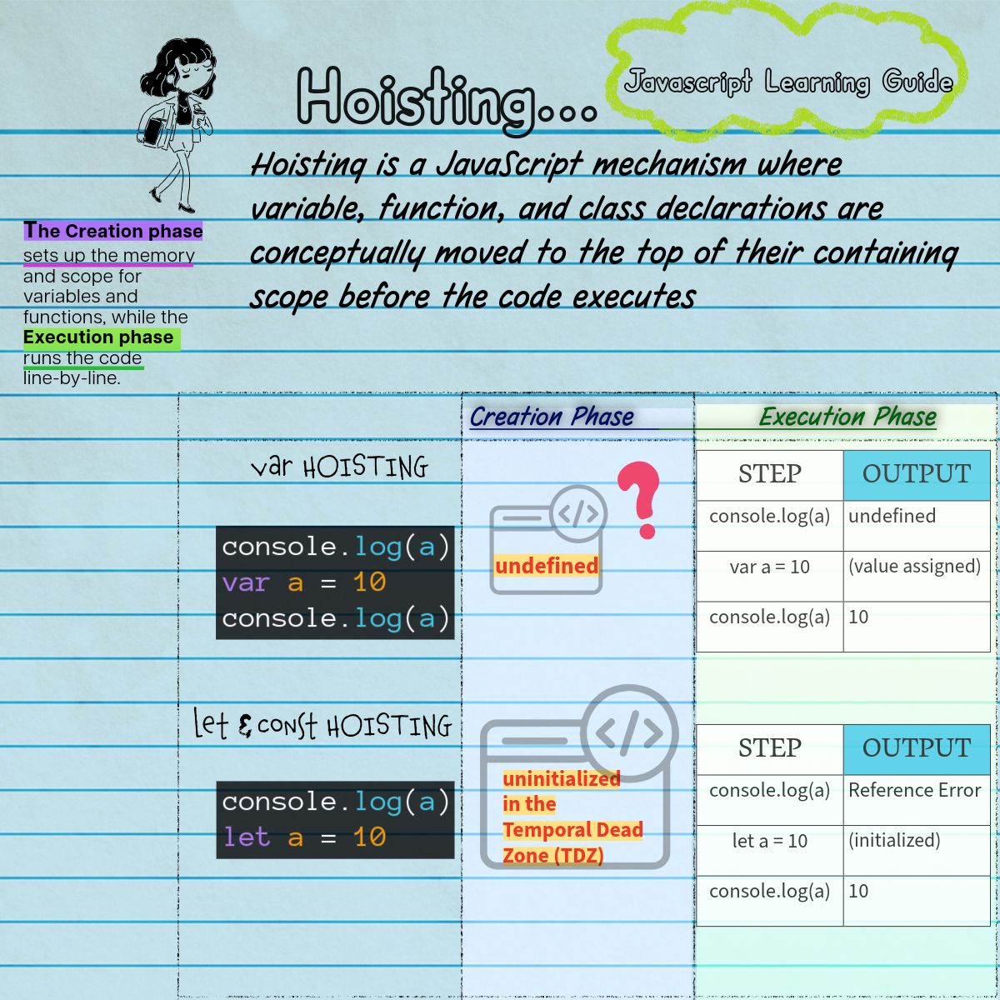

Hoisting & Lexical Scope
In Javascript, variable and function declarations are moved to the top of their scope during the creation phase.

1. var Hoisting vs let/const (TDZ)
var: Hoisted and initialized withundefined. Accessible prior to declaration without crashing!let/const: Hoisted into memory, but left uninitialized in the Temporal Dead Zone (TDZ). Accessing them before declaration throws aReferenceError.
2. Function Declarations vs Expressions
function foo() {}(Declaration): Entire function definition is hoisted and fully invocable before its declaration.var foo = function() {}(Expression): Only the variable namefoois hoisted (asundefined). Invocations prior to assignment throwTypeError: foo is not a function!
3. Block Scope & Variable Pollution
var ignores block boundaries like if statements and for loops, leaking variables to the outer function/global scope. let and const enforce strict block scoping inside { ... }.
The Challenge: Scope & TDZ Analysis
Implement scopeChallenge() to demonstrate your understanding. It must return an object containing:
hoistedVar: The value of avarvariable captured before its initialization (should beundefined).tdzHandled: A boolean set totrueby catching theReferenceErrorwhen attempting to access aletvariable in its TDZ inside a try/catch block.loopResult: The sum of numbers 0 through 9 calculated using a block-scopedletloop variable (sum = 45).